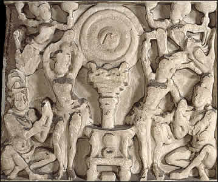

WheelThis is a wheel which represents the Wheel of the Law set in motion by the Buddha. The Wheel of the Law, called dharmachakra, was the teachings of the Buddha as revealed in his First Sermon.The dharmachakra sometimes appears on its own and sometimes appears with an empty throne or on a pillar. 
This is a relief from the Great Stupa at Amaravati showing the dharmachakra. |